Seu pet te dá
presente?
gato · cachorro · tartaruga
salva
esse guia
esse guia
1
+12carinho todo dia
2
+6água na tigela
3
1000amizade máxima
4
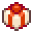
20%de chance por dia
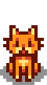
Gato
o 1º pet
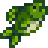
Peixe (rio ou lago)68,8%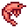
Camarão5,7%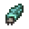
Caramujo5,7%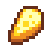
Queijo3,4%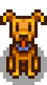
Cachorro
o 1º pet
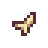
×4Fragmento de Osso31%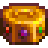
Tesouro de Artefato0,78%Tartaruga
60.000g · Marnie
Concha21,7%
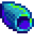
Concha arco-íris4,35%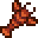
Lagosta2,2%@segredosdovalley% = qual presente vem · fonte: wiki oficial